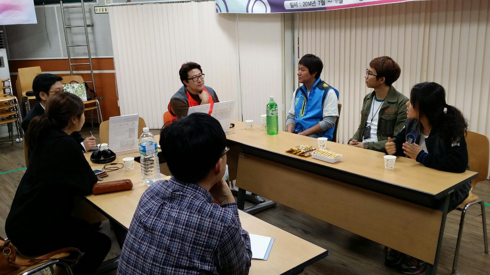

About the Team
Employees at Samsung's Creative Lab (C-Lab)are encouraged to pitch ideas with creative or altruistic elements.
The winners are given time off from their day jobs to develop their ideas and try to bring their ideas to market.
After few months of competition, I was selected as one of 15 members who got the honor to work in the C-lab HQ for a year
Music for the deaf
The project was started by casting an ironic question.
What is music to the deaf?
Even though Samsung had reputation for grand mobile seller, the company did not have a chance to listen to the
needs of people who might have been underprevileged from the mobile, the deaf.
User Study
After few months of User Study, out Team found out few characteristics of deaf people over music
1. Deaf people usually want to conceal their disability
Unlike the blind, who can clearly distinguishable from people without disabilities, it is hard to tell if the one is
deaf or not unless they start to use sign language.
Accordingly, they have strong desire to naturally mingle with
ordinary people.
2. Deaf people do enjoy MUSIC
After 3 times of user interview at the biggest deaf centers in Seoul, we found out that deaf people also have same desire to
enjoy music or cultural life, most of which remain unexplored.
They love to enjoy beat felt from the air or the speakers and wanted to learn what the music is like.
3. Less Conception on Music
Againt the current trends on headphones and music applicaitons with more functions for delicated music controls, the deaf want us to minimize the function of the system.
4. Broad range of diabilities and Level of Education among Generations
The level of the disabilities of the deaf varies over the hearing level. Moreover, the conception on music also varied with the level of basic education they had, which is closely related to the age due to lack of deaf education system in the past.
Concept
The concept of the product was to combining two other senses (Visual/Touch) to expand sound experience Our Deaf Music System consisted of Android Application providing interactive typography of the music video on market, wearable device to expand their music experience yet look similar to the current headset as they don't want to stand out from the public
Final Renderings
I made quick rending image of the wearable device since he specification of the final produdct is still confidential.